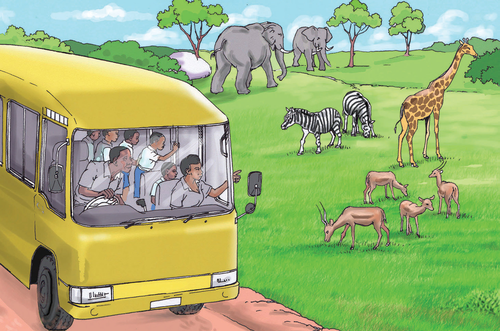

Soma habari ifuatayo kisha jibu maswali
Safari ya Mikumi
Zawadi anasoma katika Shule ya Msingi Kidudwe. Anasoma Kundirika la Kwanza Mwaka wa Kwanza. Wanafunzi walikuwa na safari ya kwenda Mikumi. Walikwenda pamoja na walimu wao. Mikumi ni mbuga ya wanyama. Mbuga hiyo iko Mkoa wa Morogoro. Wanafunzi na walimu walikwenda kuona wanyama. Waliwaona wanyama kama tembo, twiga, pundamilia na swala.
Wanafunzi walipokuwa njiani, waliimba nyimbo mbalimbali. Zawadi aliwafundisha wenzake wimbo unaohusu mbuga za wanyama. Alianza kutamka maneno ya wimbo, kisha sauti yake. Aliimba hivi, Mbuga za wanyama Tanzania. Ya kwanza ni Serengeti, Ngorongoro, Manyara na Mikumi. Oo! Tanzania oyeeee!

Wanafunzi waliimba wimbo kwa furaha, huku wakipiga makofi. Walipofika Mikumi, walipokelewa vizuri. Walipewa mtu wa kuwaongoza. Walitembelea mbuga yote na waliona wanyama mbalimbali. Wanafunzi walipigwa picha kwa ajili ya kumbukumbu.